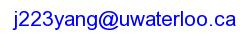

Department of Electrical and Computer Engineering
University of Waterloo
E-mail:

About Me
I am a final year PhD student working with Prof. Lin Tan in the Department of Electrical and Computer Engineering at University of Waterloo. My research interests include automated program repair, mining software repositories and software engineering.
Publications
- FSE-17 Better Test Cases for Better Automated Program Repair. [ PDF ]
Jinqiu Yang , Alexey Zhikhartsev, Yuefei Liu, Lin Tan
In the Joint Meeting of the European Software Engineering Conference and the ACM SIGSOFT International Symposium on the Foundations of Software Engineering, 2017
- MSR-16 An empirical study on the practice of maintaining object-relational mapping code in Java systems [ PDF ]
Tse-Hsun Chen, Weiyi Shang, Jinqiu Yang, Ahmed E Hassan, Michael W Godfrey, Mohamed Nasser, Parminder Flora
In the proceedings of the International Conference on Mining Software Repositories, 2016
- EMSE-14 SWordNet: Inferring Semantically Related Words from Software Context.
Jinqiu Yang , Lin Tan [ PDF ]
In the Springer Empirical Software Engineering (EMSE).
- ASE-13 Mining Question and Answer Sites for Automatic Comment Generation.
Edmund Wong, Jinqiu Yang , Lin Tan [ PDF ]
In the proceedings of the IEEE/ACM International Conference on Automated Software Engineering, 2013
- ICSE MTD-13 Generating Precise Dependencies For Large Software. [ PDF ] [ Bibtex ]
Pei Wang, Jinqiu Yang, Lin Tan, Robert Kroeger and David Morgenthaler
In the Proceedings of the Fourth International Workshop on Managing Technical Debt in conjunction with ICSE 2013.
- ICST-13 R2Fix: Automatically Generating Bug Fixes from Bug Reports. [ PDF ] [ Bibtex ] [ Slides ]
Chen Liu, Jinqiu Yang, Lin Tan and Munawar Hafiz
In the proceedings of the International Conference on Software Testing, Verification and Validation, 2013. - MSR-12 Inferring Semantically Related Words from Software Context. [ PDF ] [ Bibtex ] [ Slides ]
Jinqiu Yang, Lin Tan
In the proceedings of the Working Conference on Mining Software Repositories, 2012.
Recent Talks
- R2Fix Conference Talk, ICST'13, Luxembourg, March 2013.
- rPairs talk, Consortium for Software Engineering Research (CSER), Fall 2012.
- rPairs Conference Talk, MSR'13, Zurich, June 2012.
Selected Awards
- University of Waterloo Graduate Scholarship, Fall 2013
- Best Speaker Award in ECE Graduate Research Seminar, U of Waterloo, Winter 2013
- University of Waterloo Graduate Scholarship, Winter 2013
- University of Waterloo Research Travel Assistantship, 2012
Education
- Master of Applied Science (MASc), University of Waterloo (2011.09 - 2013.04)
- Exchange Student, Cheriton School of Computer Science, University of Waterloo (2010.09 - 2011.04)
- Bachelor of Engineering, Nanjing University (2007.09 - 2011.06)